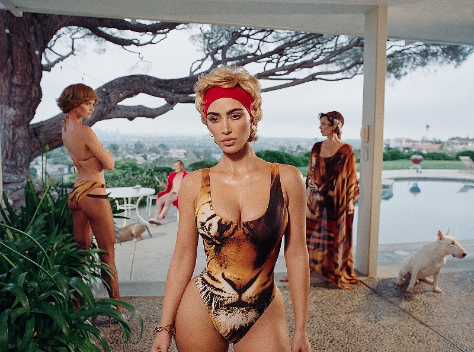

In my Image and Text Wayposts 1, I wrote about Nadia Lee Cohen's work:
London-born, Los Angeles based photographer Nadia Lee Cohen’s work explores beauty, identity and the performative aspects of these concepts through photography, sculpture and self-objectification. Often relying heavily on 1980s stylistic qualities, Lee Cohen’s artworks find beauty in the mundane and offer a surreal view of our reality. When asked how she would define beauty, Lee Cohen said, "having character and not being boring."
I really love Nadia Lee Cohen, and I feel like most of my work is referencing her in some way, so I thought it would be a shame not to include her in my research. She often works with celebrities, such as Kim Kardashian, and I find her reframing of these mega rich is one of the only PR/marketing things that actually endears me to them. I also just really love that way that she stages and lights her sets - there is always a theme or facade that filters her work, and I am fascinated by the inclusion of celebrity bodies and faces interacts with the situations that she puts them in.
click here to learn more

make space!